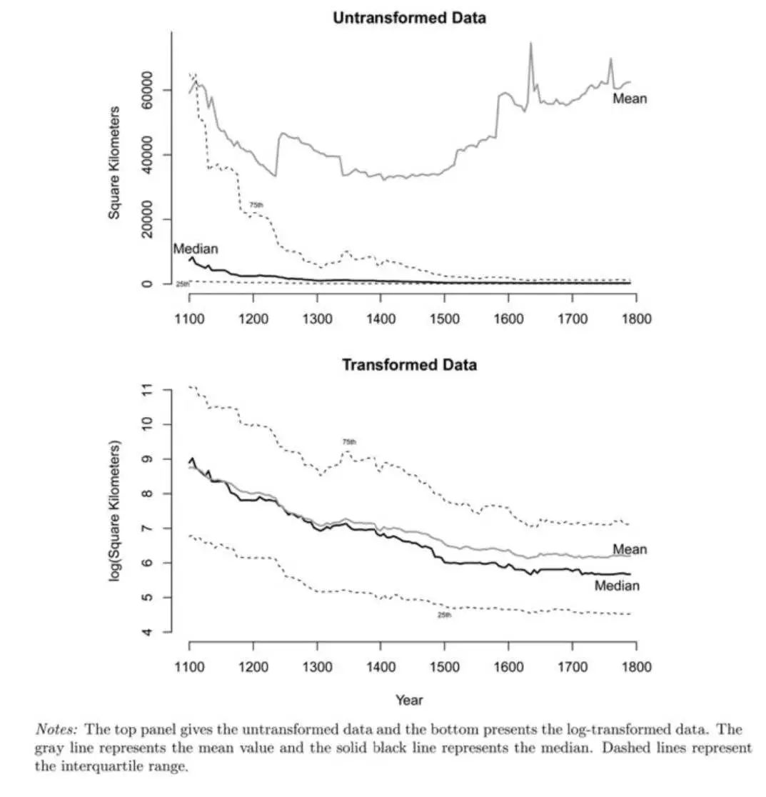
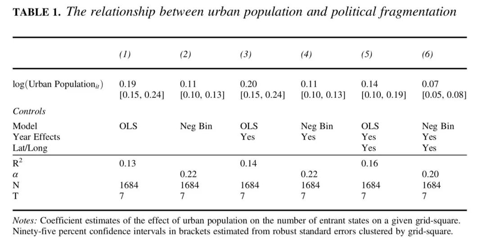

收录于合集
文献来源： Abramson, S. F. (2017). The economic origins of the territorial state. International Organization , 71(1), 97-130.
作者简介： Scott F. Abramson，普林斯顿大学政治学博士（2015），罗切斯特大学政治学系助理教授，研究兴趣为早期现代民族国家的形成
个人网页：http://www.scottfabramson.com/
自从 The Formation of National States in Western Europe (Tilly, 1975)出版的四十多年以来，关于现代领土型国家的形成问题始终萦绕在社会科学家脑中。汲取经济资源的能力和垄断强制的能力被认为是现代民族国家优于其它竞争者的重要原因。但本文认为， 目前学界过于强调战争在塑造现代国家形成中的作用，而低估了经济变化对领土型国家形成的决定性意义。 本文通过 对1100-1790年欧洲国家数据的全样本检验发现，城市的增长和商业的复兴维持了当时欧洲政治组织多样性的存在。 现代领土型国家往往发源自那些商业的边缘地带。
什么是国家
根据Weber的经典界定，国家就是在一定领土上垄断暴力合法使用方式的政治共同体。但作者认为这是一个不存在的理想形态，根据现实情况，作者将国家界定为在固定领土上基本能够维持(quasi- monopoly)暴力垄断的组织。相比于其他地理单位，国家在使用强制上具有明显的优势地位。
作者之所以在对国家的定义去掉了合法性的部分，是因为主权的观念实际上是19世纪之后的产物，这并不在作者所关注的时间段之内。而且相比于这种互相认可的合法地位，作者更在意的是这一政治单位能否成为国际体系中的有效参与者。也就是说他们是否像国家一样行事(behaved like states)。
为了将法国大革命之前的国家与非国家的政治单位相区别，作者还提出了三个必要条件 ：一是直接的军事占领。二是汲取财税的能力。三是在该政治单位的各个组成部分基础之上拥有一个统摄的行政系统。
战争和欧洲的国家体系
战争促进大型领土型国家（即Tilly所说的民族国家）的形成是目前国家形成领域的主流观点。早期现代阶段的军事技术和战术的变革也被成为军事革命。军队征募、训练和雇佣的方式都发生了根本性的变革。Tilly认为，军事技术和战术的变革让这种大型领土型国家取得了对那些依靠资本密集型策略的政治单位的竞争优势。
不同时间段的国家规模
根据众多学者的研究，军事革命的发生时间大概在15世纪中期和18世纪末尾。在这段时间内，国家的平均领土面积从三万三千平方公里增加到七万一千平方公里。但是在这个时间段内，国家领土规模的中位数远远不及平均数，甚至在领土规模处在第三四分位数位置上的国家面积还是达不到平均水平。也就是说，少数几个大国家显著的拉高了国家领土面积的平均水平。根据图一我们可以发现，在1100年到1800年间，尽管国家领土面积的平均数在增加。但其中位数、四分位数、第三四分位数的统计量都呈下降趋势。考虑到一些国家面积上的极端值，作者将不同时期的国家领土面积做了一个对数转换。我们可以发现，在1100年-1800年间各个国家领土面积的下降趋势更明显了。
尽管在15世纪到18世纪发生了军事技术的大变革，但是在这个阶段，大规模的领土型国家显然并不是国际体系中占主流的成员。甚至18世纪典型国家的国土面积比12世纪更小了。

领土规模和国家存续
接着作者又开始检验国家领土规模和国家存续之间的关系。传统观点认为，大规模火枪兵的训练和募集，重型加农炮的高费用和防御型堡垒的发展让小国家几乎难以独立生存。但是作者发现，在从1100年到1800年的整个时间段内，小国家都更容易生存下来。此外，这一关系并不会随着时间的变化而出现逆转。也就是说，即便在军事革命开始后，小国家仍然更容易在欧洲的国际体系中存活下来。
商业和现代国家的起源
有学者探讨过欧洲商业复兴和国家形成模式之间的关系，但是很少有对这一关系在经验上进行系统验证的。Stein Rokkan就提出，中欧城市带的存在解释了为什么现代领土型国家主要出现在边缘地带。大量繁荣的城市阻止了统治者们在此建立统治的尝试。在边缘的英格兰和法兰西，城市中心的缺乏使得统治者能够运用武力或者外交手段在广阔的领土上建立自己的统治。各个城市的财富，以及他们结成诸如汉萨同盟这样的集体安全组织，让他们有足够的能力维持自身的独立地位。直到15世纪，威尼斯“领主国”的税收财富还要比法国高60%，甚至能够达到西班牙和英格兰的二倍。那些在地理上较小的城市国家可以通过雇佣兵和购买武器制备等方式在国家的竞争中存活下来。可以说正是11-12世纪的商业革命保证了当时欧洲的政治碎片化。而在商业发展不足和缺乏城市的地区，大型领土国家已经开始形成了。

根据上图，实线表示的是商业发达的核心地区，虚线表示的是剩余的边缘地区。中欧核心地区的国家数量基本在700年间维持了一个上升的趋势，而边缘地区则以15世纪为界呈现出一个国家数量先增加后减少的趋势。在国家的领土规模上，中欧核心地区基本维持了一个下降的趋势。而其他边缘地区则以16世纪早期为界呈现出一个先下降再增加的趋势。这也证明了作者的观点，商业发展带来的城市和城镇的增加阻碍了领土型国家的形成和巩固。
接着作者将国家数量作为因变量来反映政治碎片化程度，以城市人口数量为自变量，进行了回归分析，结果如下表。结果发现，一定范围内的城市人口越多，该地区的国家数量也就越多。随后作者还通过工具变量法，用两阶段最小二乘回归（2SLS）法同样验证了其对商业发展和大型领土国家关系的判断。

结论
本文在经验上证明了， 在法国大革命之前，影响国家规模与数量的主要是经济因素。 商业繁荣下形成的新兴城市和社会阶层完全有能力保卫他们自己，并最终维持了欧洲政治碎片化的状态。 而 在大陆的边缘地带，在商业资产阶级无力抵御大型国家统治的地方，早期现代国家正在形成。
**
**
编译：赵德昊
编辑：吴温泉
审读：杨端程

“广告点一点，也是支持学术公益 ”
”
政文观止
微信扫一扫赞赏作者 __赞赏
已喜欢，对作者说句悄悄话
取消 __
发送给作者
发送
最多40字，当前共字
上一页 1/3 下一页
长按二维码向我转账
受苹果公司新规定影响，微信 iOS 版的赞赏功能被关闭，可通过二维码转账支持公众号。